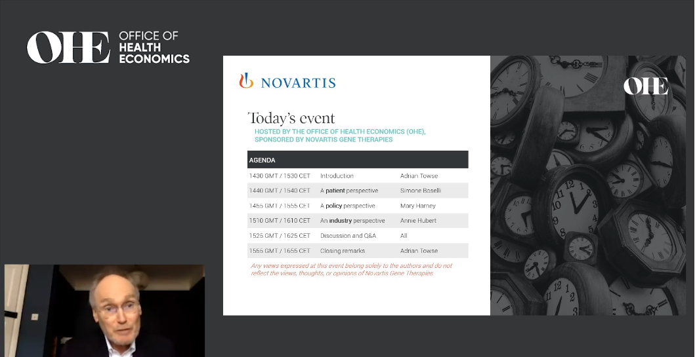
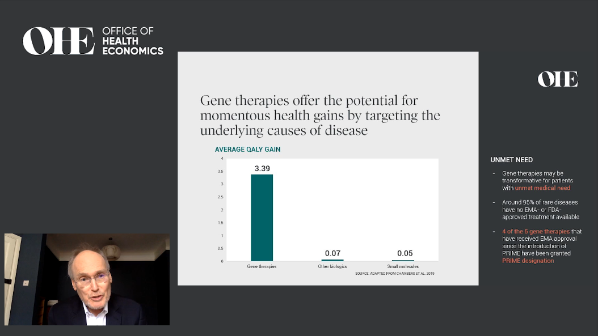
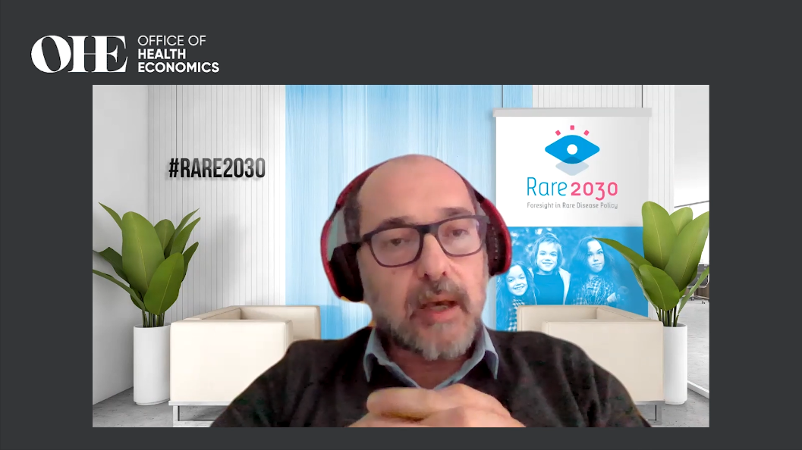
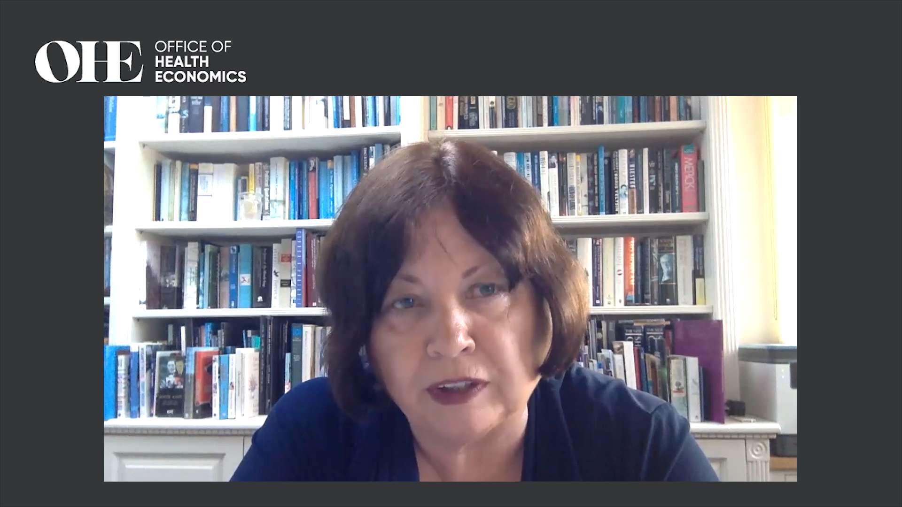
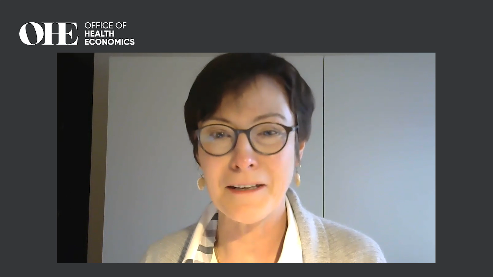

El pasado 16 de marzo tuvo lugar el webinar “The promise
of gene therapies: Are we ready?”
organizado por la Office of Health
Economics. Pese a que las terapias génicas podrían
suponer un gran paso adelante en la medicina, existen dificultades que deben
ser superadas para aumentar la viabilidad de estas nuevas tecnologías. En esta
entrada, repasamos las intervenciones de los expertos en la materia:
Presentando, Adrian Towse

Las terapias génicas cuentan con una efectividad
incremental (medida en QALYs) mucho mayor que otras
terapias como, por ejemplo, diferentes terapias biológicas y/o de moléculas
pequeñas. De hecho, se espera que durante el periodo 2020-2030 se duplique el
número de terapias génicas disponibles. Sin embargo, el uso de estas nuevas
terapias requiere afrontar varios desafíos: altos precios, incertidumbre
respecto a su efectividad a largo plazo, y sostenibilidad financiera. De esta
forma, este debate se centra en tres cuestiones: 1) el valor de las terapias
génicas a largo plazo, 2) la confluencia de las terapias génicas con el sistema
de salud y los objetivos de la sociedad, 3) el papel del precio de las terapias
génicas en la sostenibilidad de los sistemas de salud. 
Desde la perspectiva del paciente, Simone Boselli ¿Qué es lo que ofrecen las terapias génicas?
Teniendo en cuenta que el 72% de las enfermedades raras tienen un componente
genético, su tratamiento con terapias génicas supone un abordaje desde la raíz
del problema. Además, el 70% de las ocasiones los síntomas de las enfermedades
raras se manifiestan durante la niñez, cuando el paciente aún tiene una larga
vida por delante. Las terapias génicas pueden suponer un antes y un después
para este tipo de pacientes porque en la actualidad sabemos que sólo del 5% al
7% de los pacientes han recibido un tratamiento transformador. ¿Son asequibles? Las terapias génicas ofrecen valor al
tratar enfermedades crónicas que suponen un gran gasto para el sistema sanitario.
Además, también pueden tratar enfermedades ultrararas,
las cuales representan un 90% de todas las enfermedades existentes.  ¿Son sostenibles financieramente? Si existiese una mutualización del riesgo, podrían ser sostenibles
financieramente en un futuro. Sin embargo, es necesaria más colaboración que
competencia para lograr que estas terapias alcancen su objetivo final, el
paciente. Desde el punto de vista de los
decisores, Mary Harney ¿Estamos preparados? ¡Pues depende de quién seamos! ·
- Los pacientes están listos y tienen
sus esperanzas y un gran interés puestos en la ciencia. Además, están dispuesto
a asumir riesgos. ·
- La industria también esta lista,
existe gran inversión, comercialización y se están afrontando los retos de
fabricación. ·
- Los médicos también están listos y
quieren ver como las terapias génicas se convierten en algo común. ·
- Los reguladores, sin embargo, no
están completamente listos por la falta de evidencia, la existencia de incertidumbre
y la ambigüedad que suponen algunas de estas terapias. En estos casos, los
sistemas de decisión deben adaptarse para tener en cuenta, también, el impacto
a largo plazo que pueden suponer las terapias génicas. ·
- Los políticos son los que menos
listos están pues existen dudas respecto a la seguridad, fiabilidad, impacto
presupuestario y falta de información. Entonces, ¿qué es lo que ofrecen las terapias
génicas? De momento, existe una gran incertidumbre respecto al valor que estas
pueden aportar a largo plazo. En este sentido, nuevos mecanismos deberían ser
desarrollados para ayudar a la toma de decisiones controlando esta
incertidumbre. ¿Son asequibles? Debido a la incertidumbre que existe
en el proceso, es extremadamente difícil tomar una decisión sobre la
financiación y los mecanismos de pago. Los sistemas de salud no están
preparados: los modelos de pago no son aptos y existe información y recursos
limitados para un tratamiento tan a largo plazo.  ¿Son sostenibles financieramente? Lo serían si: ·
- Se cambiara
el criterio de valoración, por ejemplo, computando los beneficios a lo largo de
un gran periodo de tiempo. Sin embargo, los ensayos clínicos no duran tanto. ·
- Se creasen infraestructuras para
recopilar información, ya que muchos sistemas de salud no cuentan con estas
infraestructuras. ·
- Si la Unión Europea planease crear
un lugar común de datos de salud. Desde el punto de vista de la industria,
Annie Hubert El valor que las terapias génicas ofrecen es, por
ejemplo, que la mitad de los pacientes oncológicos tratados con ellas alcancen
una remisión completa. Esto supone un gran valor para la sociedad, pero la falta
de ensayos clínicos aleatorios dificulta la labor de evaluar la importancia de
estos tratamientos. Existe un problema con respecto a la asequibilidad.
La evaluación de tecnologías sanitarias (HTA) necesita adaptarse, por ejemplo,
extendiendo el periodo de tiempo que abarca el análisis. Además, la
incertidumbre existente en el lado inversor ralentiza el desarrollo, por lo que
nuevos mecanismos de pago deben establecerse. También es importante mencionar
que no todos los sistemas sanitarios están preparados y que se necesita evidencia
en un lenguaje común.  ¿Son sostenibles financieramente? Sí si se realizan
los ajustes necesarios. Los sistemas de salud no están preparados y las
ganancias potenciales deben ser tenidas en cuenta. Los objetivos de la sociedad
(societales) deberían ser definidos de forma más transparente. Preguntas y debate -
¿Cómo podríamos asegurarnos de que
un paciente sea tratado con terapia génica incluso si esta no se encuentra
disponible en su país? -
Un marco regulatorio para la Europa
de los 27 es necesario y permitiría evaluaciones políticas conjuntas de
tecnologías sanitarias a nivel supranacional. Más allá de esto, también podría
crearse una mesa de negociación de todos los países interesados en financiar
y/o adquirir estas tecnologías. -
¿Corremos el peligro de prestar
demasiada atención a terapias no tan necesarias recortando, así, el presupuesto
público en intervenciones muy coste-efectivas? ¿Por qué debería preocuparnos el
presupuesto público si hay muy pocos pacientes? ¿Deberíamos pensar más en el
impacto en la sociedad que en el sistema sanitario? -
Estas terapias tienen un gran
impacto en la vida de muchas personas, y no estamos seguros de que el recorte
en salud pública sea debido a la introducción de las terapias génicas. También
hay que tener en cuenta la pérdida de empleo. Además, el impacto en la sociedad
no puede ser decidido a través de una intervención adecuada. -
¿Cómo hacemos que nuestros sistemas
de salud puedan vincular la financiación y pago a los resultados de estas
terapias? -
Más y más productos están siendo
rembolsados pese a que está tomando mucho tiempo. Los sistemas de reembolso
innovadores se basan, precisamente, en el desempeño del producto. Necesitamos abordar
la variabilidad existente a través de sistemas de reembolso innovadores. -
¿Qué cambio político realizaría si
sólo pudiera realizar uno? -
No se requieren tantos cambios
políticos como de obtención de información. Aun así, eliminaría barreras de los
modelos de reembolso. -
¿Cómo deben ser los cambios en los
sistemas de valoración de tecnologías sanitarias? -
Habría que ampliar el enfoque y
tomar más en cuenta la opinión del paciente.